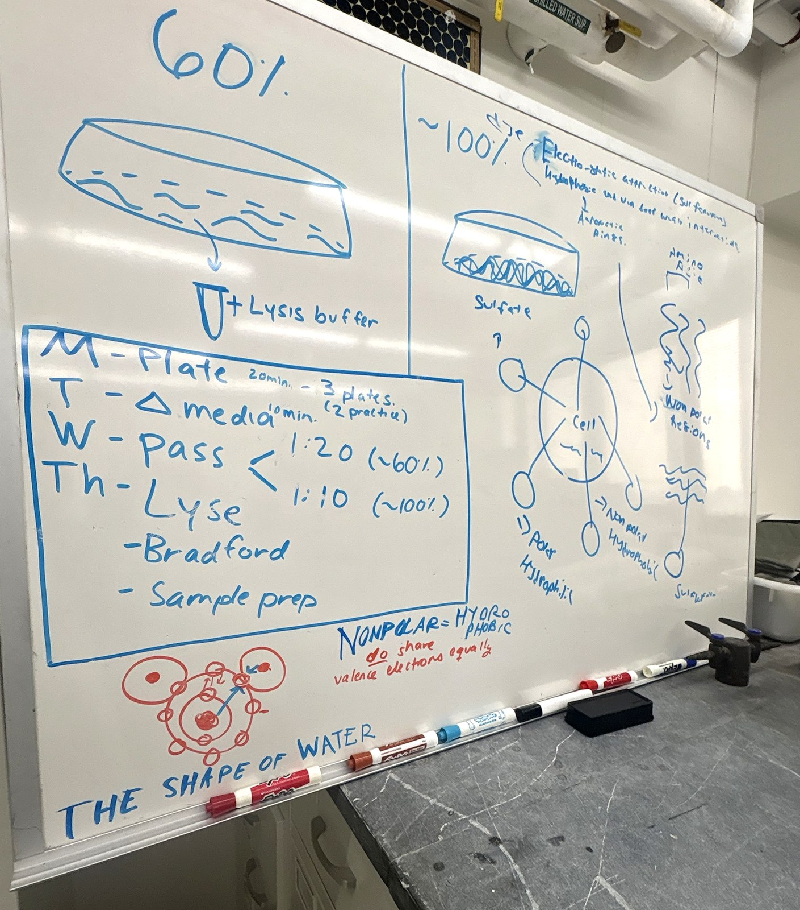
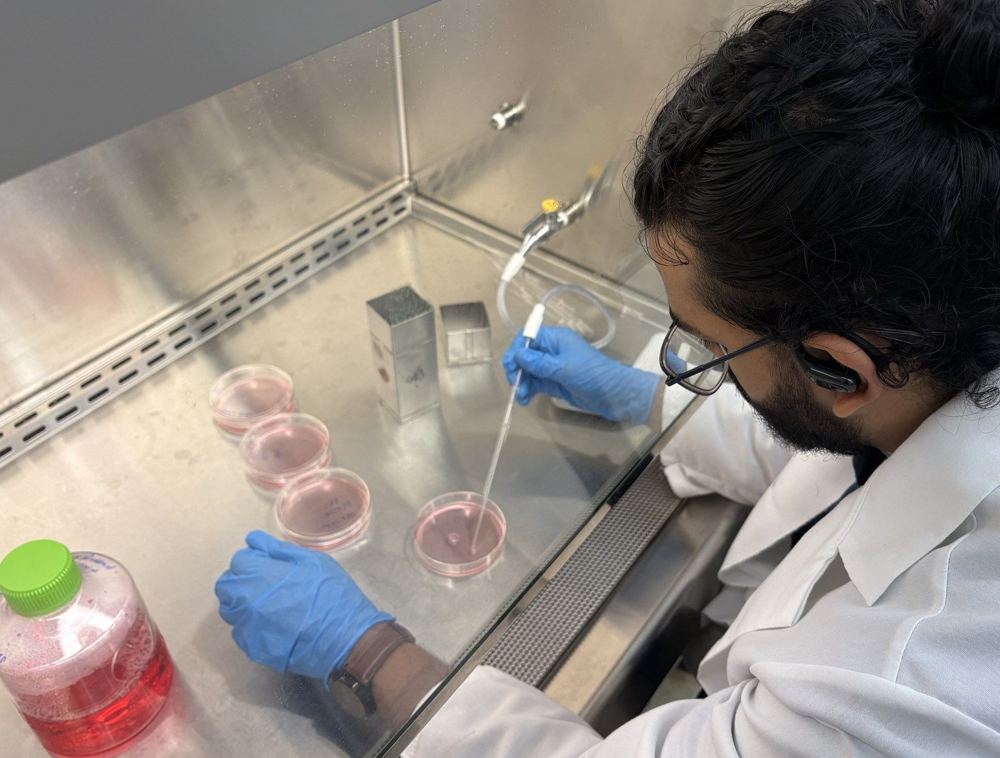

Cell culture · Protein assays
How cell density changes IL-6 signalingOngoing
I've been working in Dr. Pamela del Valle's lab since this past summer on a question that sounds simple: do crowded cancer cells make different things than spread-out ones? Specifically we're looking at interleukin-6 and its receptor in a mouse melanoma line (YUMM1.7). IL-6 signaling is tied to tumor growth and spread, and there isn't much published on how confluency alone affects it in these cells.
The reason I think this matters: in tissue engineering we design environments to mimic what happens in the body. If something as basic as how crowded a dish is changes what the cells produce, that changes how you read every model built on it. IL-6 is also a biomarker doctors track in cancer and inflammation, so it's not only an in vitro question.
We built the project from scratch. There was no shelf of ready-made reagents — we made our own buffers from recipes, including the lysis and running buffers for Westerns, which meant doing the calculations, weighing everything out, and checking pH before we could run anything. Slower than opening a kit, but I know what's in every tube and why.
It also didn't start the way we planned. The melanoma cells took weeks longer to arrive than expected, so we practiced on HEK 293T cells borrowed from another lab. That turned out to help — I got the basics down before they counted.
The thing I learned the most from was a bad standard curve. My first Bradford curve wasn't a straight line. Working out why taught me more than a clean one would have, and it's the same idea as calibrating any instrument: if the calibration is off, every number after it is off too. I spent similar time figuring out which reducing agent to use in our sample buffer for probing IL-6R, which showed me how many small decisions sit behind one experiment.
No results yet. We're running through the end of the fall semester, and the next step is comparing IL-6 secretion and IL-6R expression at 60% versus 100% confluency by ELISA and Western blot. I'll put the data here when we have it.
- Lab
- Dr. Pamela del Valle
- Question
- Does confluency change
IL-6 / IL-6R in vitro? - Cells
- YUMM1.7 mouse melanoma
HEK 293T for practice - Techniques
- Sterile cell culture,
passaging, lysis,
Bradford assay,
Western blot prep - Reagents
- Buffers made from
recipe, not kits - Next
- ELISA + Western at
60% vs 100% - Status
- Running through
fall semester

